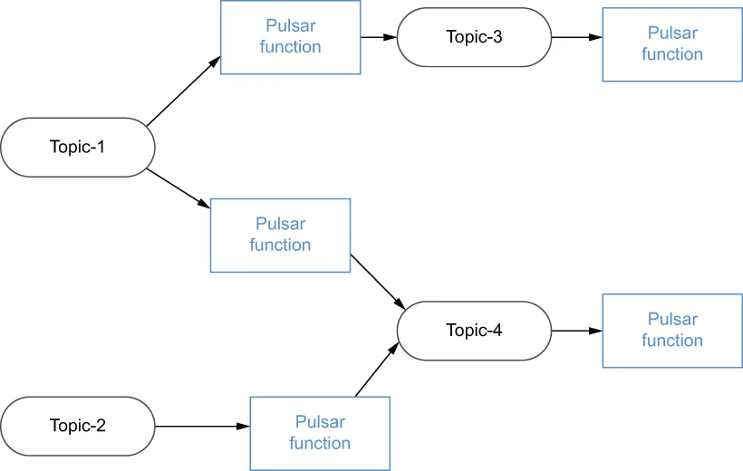

The programming model behind Pulsar Functions is very straightforward. Pulsar functions receive messages from one or more input topics, and every time a message is published to the topic, the function code is executed. Upon being triggered, the function code executes its processing logic upon the incoming message and writes its (optional) output to an output topic. Although all functions are required to have an input topic, they are not strictly required to produce any output to an output topic.
Pulsar Functions 背后的编程模型非常直白。Pulsar function 从一个或多个输入主题接收消息，每当有消息被发布到该主题时，函数代码就会被执行。在被触发后，函数代码会对传入的消息执行其处理逻辑，并把它的（可选的）输出写入一个输出主题。尽管所有函数都必须有一个输入主题，但并不严格要求它们向输出主题产生任何输出。
It is possible to have the output topic of one Pulsar function be the input topic of another, allowing us to effectively create a directly acyclic graph (DAG) of the Pulsar functions, as shown in figure 4.4. In such a graph, each edge represents a flow of data, and each vertex represents a Pulsar function that applies the user-defined logic to process the data. The combinations of Pulsar functions into these DAGs are endless, and it is possible to write an application that is entirely composed of Pulsar functions and structured as a DAG if you so choose.
让一个 Pulsar function 的输出主题成为另一个 function 的输入主题是可能的，这使我们能够有效地创建出一张由 Pulsar function 构成的有向无环图（DAG），如图 4.4 所示。在这样的图中，每条边代表一股数据流，每个顶点代表一个 Pulsar function，它对数据应用用户定义的逻辑进行处理。把这些 Pulsar function 组合成这类 DAG 的方式是无穷无尽的；如果你愿意，完全可以编写出一个全部由 Pulsar function 构成、并以 DAG 形式组织的应用。

Figure 4.4 Pulsar functions can be logically structured into a processing network.
图 4.4 多个 Pulsar function 可以在逻辑上被组织成一张处理网络。